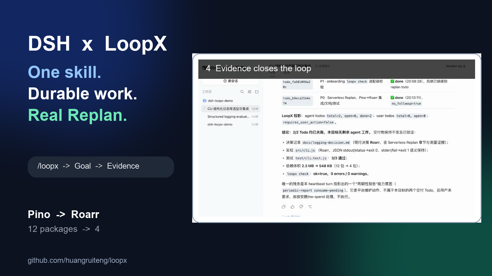

DSH × LoopX Replan
The user can change a material constraint without losing the decision trail, while DSH remains the execution host and LoopX keeps the work frontier visible.
Case context
A new material constraint can invalidate an agent's earlier decision, but ordinary chat correction can erase why the plan changed and what still needs validation.
Repository evidence
A host-native agent can change plans without erasing why the old plan was superseded.
native skill activation, Replan, successor Todo, evidence, GoalBar
A host-native agent can change plans without erasing why the old plan was superseded.
{kind=link}

LoopX behavior
- 1activate explicitly through the native DSH skill picker
- 2retain the initial decision and evidence
- 3record a Replan when the serverless constraint changes the ranking
- 4bind successor implementation and tests to the same durable Goal
- 5close the visible GoalBar only after the revised work settles
What the user sees
The user can change a material constraint without losing the decision trail, while DSH remains the execution host and LoopX keeps the work frontier visible.
Repository sources
Evidence boundary. Edited real DSH recording plus a synthetic public fixture and tests; credentials, provider configuration, raw reasoning, setup retries, local LoopX state, and the unedited recording are excluded.
python3 examples/dsh-loopx-demo-smoke.py